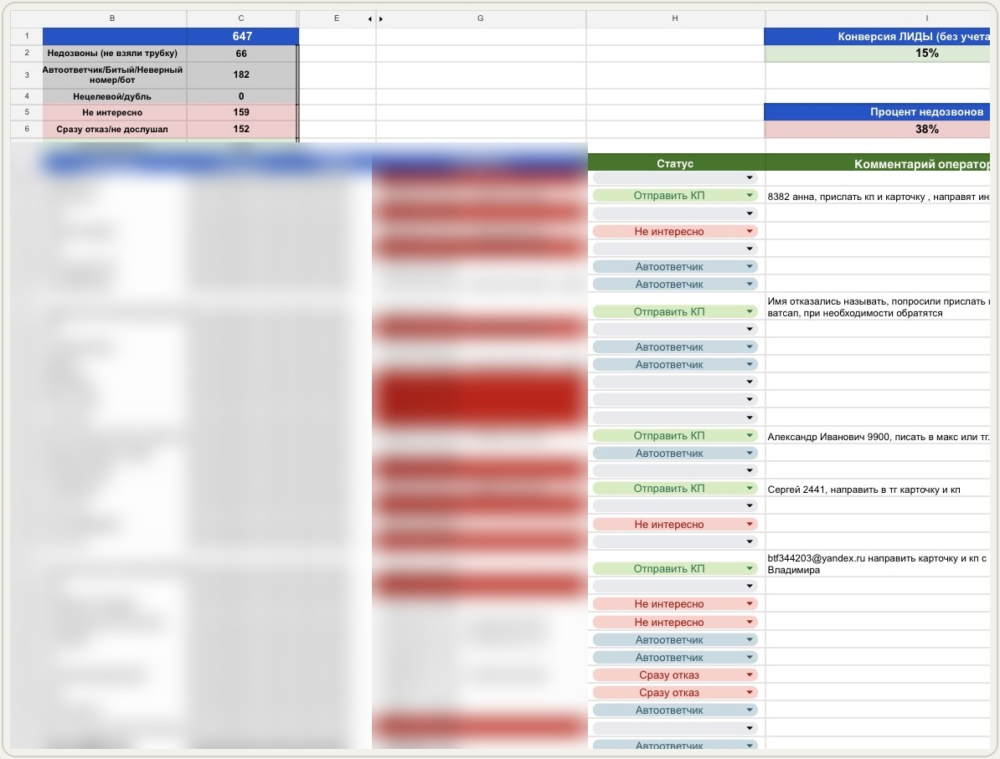
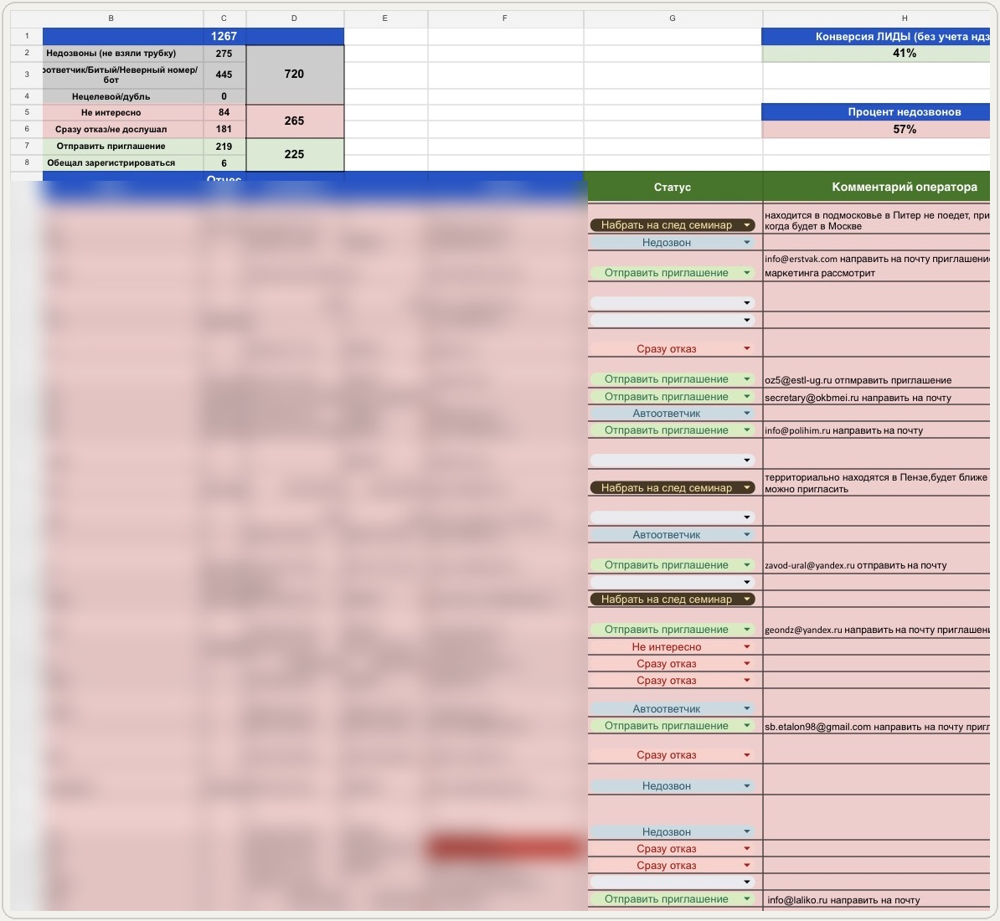
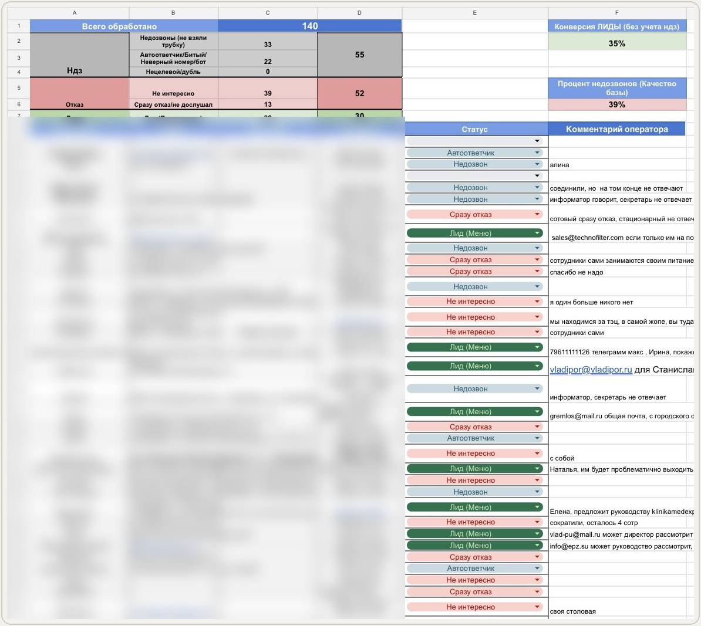
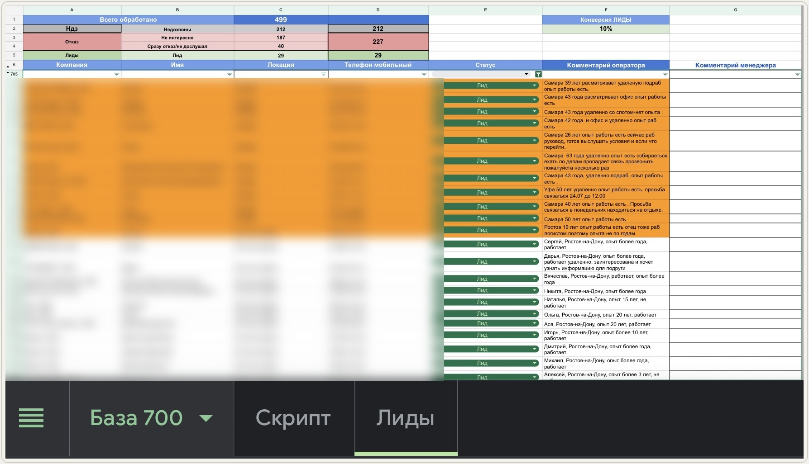
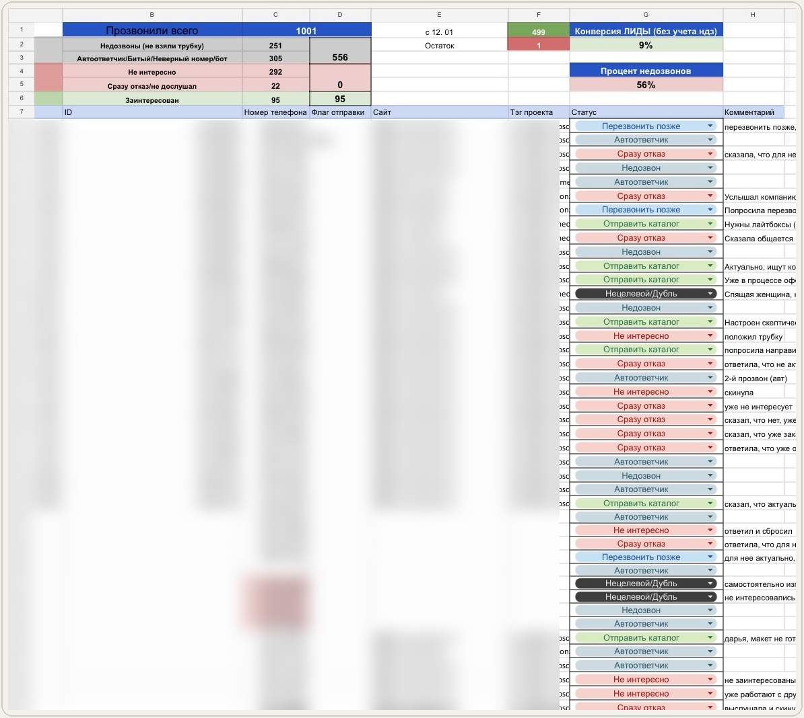

Проверяем холодный канал на реальных разговорах - прежде чем масштабировать
Alster Services продаёт не просто количество звонков. В тесте мы проверяем всю связку: базу, предложение, скрипт, работу оператора, качество целевого лида и дальнейшую экономику продажи.
Тест нужен не для каждой задачи
Коммерческая задача
Проверяем новую гипотезу, предложение или аудиторию и получаем целевые лиды из холодной базы. Старт - тест 300 контактов за 15 000 р. После теста выбираем модель дальнейшей работы.
Операционная задача
Опрос, анкетирование, актуализация базы, приглашение на мероприятие, информирование и массовая обработка собственной базы без проверки новой коммерческой гипотезы. Тест обычно не нужен, стоимость зависит от объёма и сложности сценария.
Если работа со старой базой фактически становится повторной продажей или новой коммерческой гипотезой, необходимость теста определяем отдельно.
Сначала тест. Потом масштабируем.
300 контактов - это размер тестовой базы, а не 300 состоявшихся разговоров. Мы проверяем и саму базу: актуальность контактов, фактическую дозваниваемость и пригодность для дальнейшей работы. Недозвоны и неактуальные номера тоже часть результата.
Обычно тест занимает 2 рабочих дня, максимум - 3. По мере работы в таблице появляются статусы, результаты звонков и подробные комментарии операторов, поэтому ход проекта виден в реальном времени.
Если у вас уже есть скрипт, я посмотрю его и дам точечные рекомендации. Полноценное переписывание или разработка нового скрипта в стоимость теста не входят.
300 контактов тестовой базы. Обычно 2 рабочих дня, максимум 3.
Что останется у вас после прозвона
Рабочая таблица с результатом по каждому контакту, статусами, подробными комментариями операторов, целевыми лидами и итоговой статистикой. После завершения теста я разбираю результаты и даю выводы по базе, скрипту и самой гипотезе.





Как считается работа после теста
После теста выбираем подходящую модель дальнейшей работы по фактическим результатам проекта.
За состоявшийся разговор
от 30 р. за состоявшийся разговор.
Контакт + целевой лид
30-50 р. за контакт + 500-3 000 р. за целевой лид.
Только за целевой лид
2 500-5 000 р. за целевой лид.
Конкретную модель выбираем по результатам теста и согласовываем до запуска основного объёма.
Снижение цены начинается на объёме. Следующие 300 контактов после тестовых 300 не становятся автоматически дешевле. Пересматривать стоимость имеет смысл от 1 000 контактов.
Операторы звонят. Я веду и контролирую проект.
В команде - до 15 операторов. На конкретный проект ставлю столько людей, сколько требуется под объём и сроки. Операторы выполняют прозвон, фиксируют статусы и комментарии и собирают фактическую реакцию рынка.
Я лично веду проект: контролирую качество, смотрю результаты, разбираю сложные звонки, при необходимости корректирую подход и работу операторов, анализирую причины отказов и экономику теста.
Слышат реакцию
Можно уточнить причину отказа, а не оставить только статус «нет».
Не теряются вне скрипта
Оператор реагирует на неожиданный ответ и задаёт уточняющий вопрос.
Оставляют контекст
В комментариях остаются реальные возражения, интерес, ограничения и следующий шаг.
Перестаньте считать стоимость звонка. Считайте экономику продажи.
Нас интересует стоимость целевого лида и то, имеет ли она смысл относительно потенциальной продажи.
Иногда и одного лида достаточно
Клиент из ниши с очень высоким чеком хотел прозвонить около 2 000 компаний. Я заранее объяснила, что высокая конверсия здесь маловероятна. Для клиента это было приемлемо: потенциальная сделка могла составлять около 30 млн р., поэтому даже один качественный лид мог сделать прозвон экономически оправданным.
300 контактов. 0 лидов. И тест всё равно выполнил свою задачу.
Клиент открыл прачечную и самостоятельно подготовил базу. Одним из сегментов были парикмахерские и похожие компании. После значимой части теста лидов не было.
Операторы зафиксировали реакции рынка, а я стала разбирать звонки и причины отказов. Выяснилось, что значительная часть сегмента использует одноразовые полотенца - сама потребность в услуге отсутствует. Поменяли гипотезу: вместо парикмахерских взяли бани, сауны и другие организации, которые работают с многоразовым текстилем. Эта аудитория дала другую реакцию - новая гипотеза сработала.
Плохой тест - не тот, где мало лидов. Плохой тест - тот, после которого вы так и не поняли, почему он прошёл плохо.
База и скрипт - отдельные элементы проекта
Готовая база
Таблица с контактными данными, по которым оператор может сразу звонить. Ручной поиск информации перед каждым звонком в стандартную цену не входит.
Нет готовой базы?
Сбор можно заказать отдельно - от 6 р. за контакт. Цена зависит от объёма, источника, критериев и трудоёмкости поиска.
Свой скрипт или разработка
Готовый скрипт я посмотрю и дам точечные рекомендации. Полноценная переработка и новый скрипт - отдельная услуга.
Сгенерированный текст и рабочий сценарий продажи - не одно и то же
Нейросеть может быстро сгенерировать текст разговора. Рабочий скрипт должен выдерживать первые секунды звонка, реакцию клиента, неожиданные вопросы и возражения. Логику сценария я разрабатываю сама исходя из продукта, аудитории и задачи.
В B2B фактически нужны две части: разговор с секретарём и выход на ЛПР, затем разговор с ЛПР и презентация предложения. Поэтому такая разработка трудоёмнее.
Как проходит разработка
Бриф, созвон по продукту и задаче, предоплата 50%, разработка, второй созвон с презентацией и разбором, согласованные правки и оставшиеся 50%.
После запуска
Если затем запускается прозвон, скрипт проверяется на реальных разговорах и при необходимости корректируется.
Цены
B2B-скрипт - 12 000 р. B2C-скрипт - 6 000 р.
Операционный прозвон без теста
Для готовой базы и задач без проверки новой коммерческой гипотезы можно сразу считать работу по объёму.
Операционный прозвон
Стоимость указана за обработку готовой базы соответствующего объёма, а не за количество состоявшихся разговоров.
Чем больше объём готовой базы и проще сценарий, тем ниже стоимость обработки одного контакта.
Когда считаем отдельно
Сложные многоэтапные сценарии, ручной поиск контактов, работа по ссылкам Avito / ЦИАН / Авто.ру, расширенная B2B-отработка, срочные и другие объективно более трудоёмкие задачи.
Не каждый проект я возьму
Если ещё до теста видно, что холодный канал в конкретной нише системно выжжен или экономика заведомо не складывается, я скажу об этом до запуска. Мне нет смысла брать проект только ради того, чтобы прозвонить базу и выставить счёт.
Через телефонию Alster Services сомнительные B2C-базы не обзваниваются. B2C-проект можно организовать через телефонию заказчика, при этом ответственность за базу, основания её использования и связанные юридические риски остаются на стороне заказчика.
Принципиально не работаю
С холодным массовым прозвоном собственников недвижимости для риелторов и массовыми холодными продажами услуг банкротства физических лиц / BFL.
Нет своей телефонии?
Её можно подключить и настроить отдельно на вашей стороне. Мы предоставим операторов и организуем прозвон через эту инфраструктуру.
Коротко о деталях работы
Тест и база
300 контактов - это 300 дозвонов?
Нет. Это объём тестовой базы. Фактическое количество разговоров зависит от реальной дозваниваемости.
Всегда ли нужен тест?
Нет. Он нужен для проверки новой коммерческой гипотезы. Операционные задачи без проверки продаж обычно можно запускать сразу по объёму.
Сколько длится тест?
Обычно 2 рабочих дня, максимум - 3. Если заказчик создаёт существенную паузу из-за базы, материалов или согласований, проект может быть перенесён, приостановлен или пересчитан.
Можно послушать звонки?
Да, точечно по запросу: лиды, отказы, спорные или интересные разговоры. Массовая выгрузка всех записей в стандартную услугу не входит.
Можно дать базу ссылками на объявления?
Можно, но это уже не готовая база. Если перед звонком нужно открывать ссылку, искать актуальный телефон и изучать объявление, проект рассчитывается отдельно.
Вы доработаете мой скрипт перед тестом?
Посмотрю и дам точечные рекомендации. Полное переписывание или разработка нового скрипта оплачиваются отдельно.
Стоимость и объёмы
Сколько стоит большой объём?
Для коммерческого прозвона варианты расчёта показаны выше в блоке «Как считается работа после теста». Для операционного прозвона действуют опубликованные тарифы по объёму готовой базы.
Можно работать только за лид?
Да, такая модель возможна после теста, если экономика проекта позволяет. Конкретная цена определяется по результатам теста и согласовывается до запуска основного объёма.
Есть ли наценка за срочность?
Обычное ускорение за счёт большего количества операторов не означает наценку. Для экстренного проекта, который требует внеплановой перестройки загрузки команды, срочность +50%.
Лиды и дальнейшая работа
Что считается целевым лидом?
Единого определения нет. До запуска согласовываем целевое действие и, при оплате за лид, понятные критерии квалификации.
Целевой лид - это уже готовый купить клиент?
Нет. Это потенциальный клиент, который соответствует согласованным критериям и совершил нужное целевое действие. Закрытие в продажу - следующий этап.
Доводите ли вы лиды до продажи?
В стандартный прозвон это не входит. Повторные касания, переговоры, ведение сделки и доведение до оплаты можно рассчитать как отдельную функцию продаж.
А если у меня некому обрабатывать лиды?
Тогда сначала лучше организовать дальнейшую обработку. Иначе часть результата прозвона будет потеряна.
Отправляете ли вы КП или сообщения после звонка?
В стандартной услуге оператор фиксирует запрос и передаёт его заказчику. Отправку материалов через CRM и рабочие каналы вашей компании можно организовать отдельно.
B2C и юридические вопросы
Работаете с B2C?
Да. Через телефонию Alster Services к базе применяются наши требования. Через телефонию заказчика мы можем предоставить операторов, а ответственность за базу, основания её использования и связанные юридические риски остаются на стороне заказчика. Если своей телефонии нет, её можно подключить и настроить отдельно на вашей стороне.
Что важно учитывать по рекламным звонкам физлицам?
Для рекламных звонков нужно учитывать ст. 18 Федерального закона № 38-ФЗ «О рекламе». Нарушение требований к рекламе по сетям электросвязи может повлечь ответственность по ч. 4.1 ст. 14.3 КоАП РФ; для юридических лиц штраф составляет от 300 000 до 1 000 000 р. Конкретные риски зависят от роли участника и обстоятельств нарушения. Это предупреждение, а не юридическая консультация.
Опишите продукт, базу и задачу
Я посмотрю, нужен ли здесь тест и что стоит подготовить до старта.
Откроется диалог с Ольгой в Telegram.